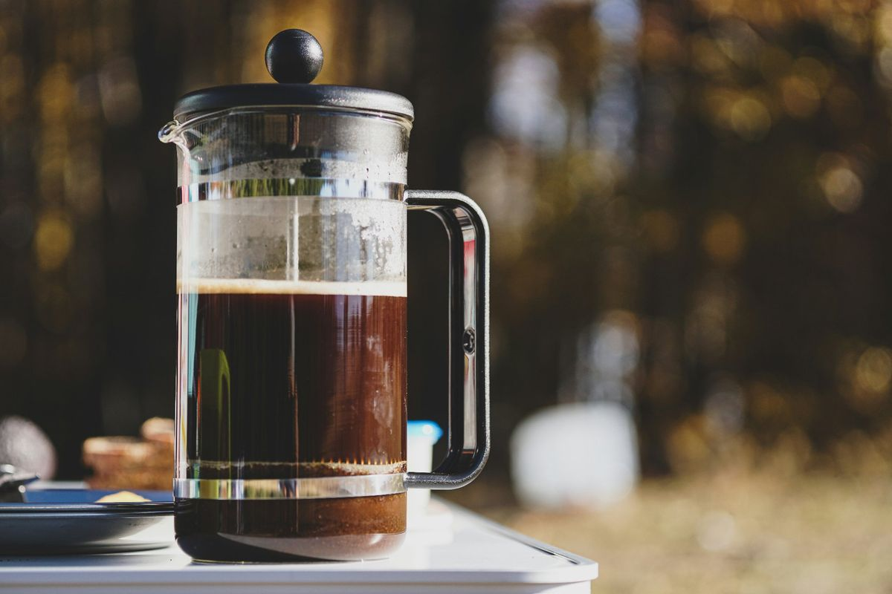
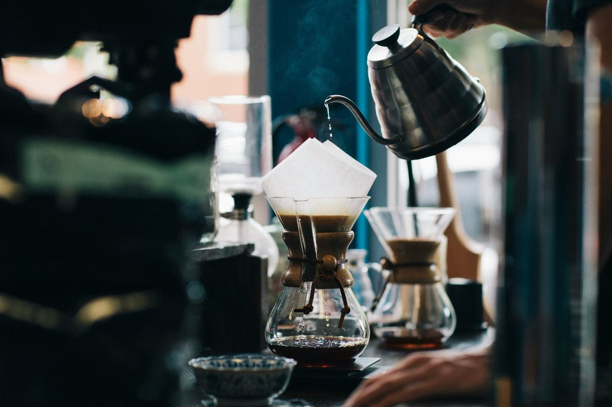
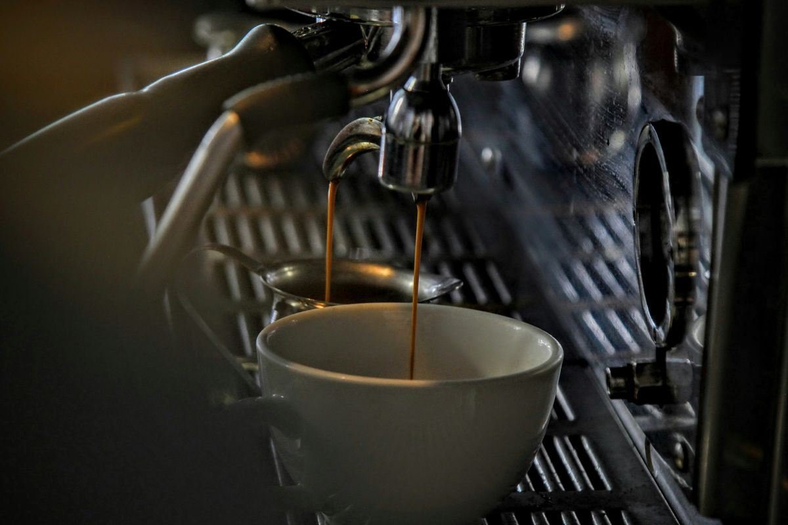
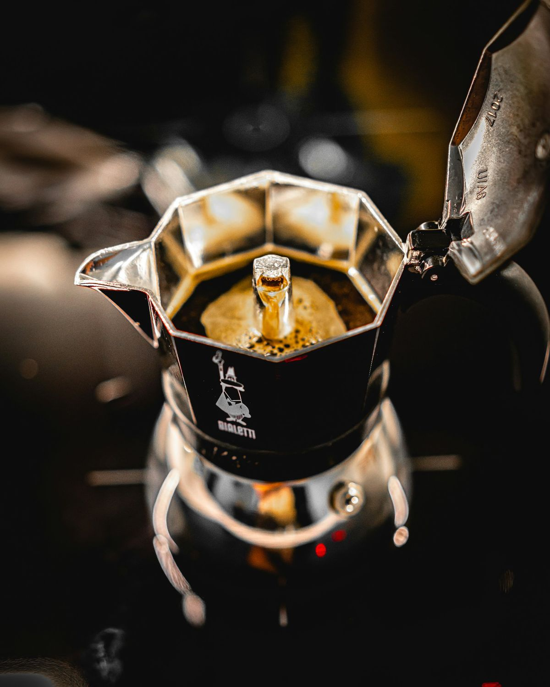
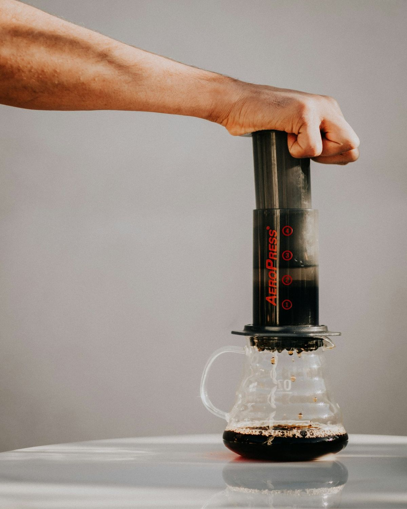
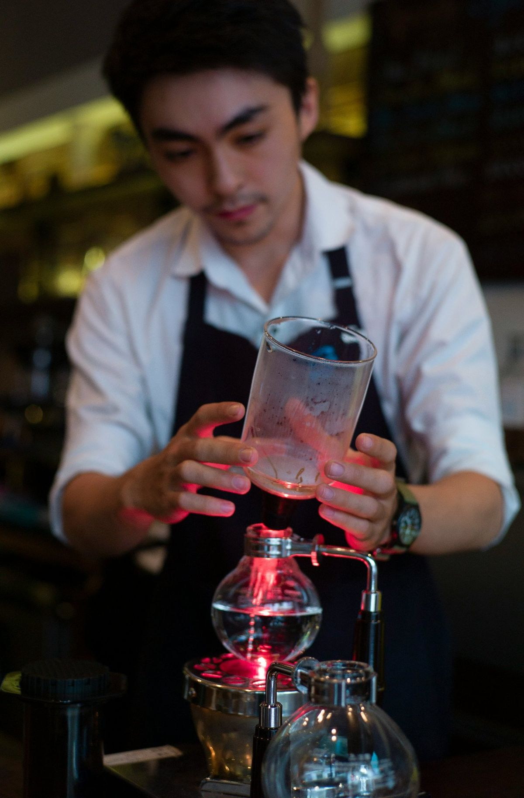
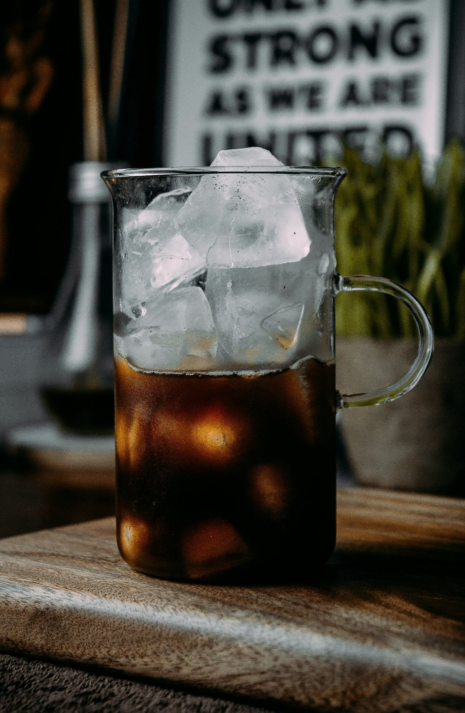

详解
逐一拆解：原理、参数与味道
01
法压壶（French Press）
浸泡式

🇫🇷 法压壶 · French PressPhoto: Sorin Gheorghita / Unsplash
原理：把粗研磨的咖啡粉直接泡在热水里 4 分钟左右，再用金属滤网压下去，把渣滓隔开。
粉水比1:15（15g 咖啡 + 225g 水）
水温92–96°C
研磨度粗研磨（类似粗盐）
时间4 分钟
味道：醇厚、有明显油脂感、口感扎实。会有少量细粉沉淀，但不浑浊。适合喜欢"厚重感"的人。
小贴士：买玻璃壶身 + 不锈钢滤网的款式即可，入门套装通常 ¥30–80。
02
手冲（V60 / 蛋糕杯 / 聪明杯）
滤杯注水

🫗 手冲 · Pour Over / V60Photo: Karl Fredrickson / Unsplash
原理：热水通过滤杯中的咖啡粉层，受重力作用滴落。注水方式、水流速度、滤杯形状都会影响味道。
粉水比1:15–1:17
水温88–94°C（浅烘用高 / 深烘用低）
研磨度中细研磨（类似白砂糖）
时间2:30–3:30
味道：层次清晰、酸质明亮，最能展现咖啡豆的"风土"——所以精品咖啡店几乎都用手冲。也是玩家最爱、最耐玩的方式。
小贴士：入门推荐 V60 滤杯 + 一把鹅颈壶 + 一只手摇磨豆机，预算 ¥300–500 就能起步。
03
意式机（Espresso）
高压萃取

☕ 意式浓缩 · EspressoPhoto: GC Libraries Creative Tech Lab / Unsplash
原理：9 bar 大气压 + 90°C 左右的热水，25–30 秒内穿过 18g 左右的细研磨咖啡粉，得到约 36g 浓缩液。
粉量18 g（双份）
出液量36 g
时间25–30 秒
研磨度极细（类似面粉）
味道：高浓度、油脂丰富（crema 油脂层）、苦甜平衡明显。是拿铁、卡布、美式等所有咖啡馆饮品的"基底"。
小贴士：家用意式机入门门槛较高（¥2000+），新手可以从胶囊机或半自动入门。
04
Moka 壶（摩卡壶）
蒸汽加压

🔥 摩卡壶 · Moka PotPhoto: Martin Tupy / Unsplash
原理：下壶水加热产生蒸汽，蒸汽压力（约 1.5–2 bar）把水推过咖啡粉层，汇集到上壶。意大利家庭的"国民器具"。
粉水比下壶装满水 / 粉槽装平
火力中小火（避免过萃）
研磨度中细研磨
时间4–5 分钟
味道：比手冲浓、比意式稍弱，口感厚重、香气集中。常被叫"穷人的意式"。
小贴士：看到上壶液体颜色从深棕变浅时，立刻离火（避免焦苦）。经典品牌 Bialetti 经典款 ¥200–400。
05
爱乐压（AeroPress）
手压萃取

🧃 爱乐压 · AeroPressPhoto: Onur Kaya / Unsplash
原理：用注射器式的结构，手动按压活塞，20 秒左右把水压过滤纸挤出浓缩液。介于手冲和意式之间。
粉水比1:10–1:16
水温85–94°C
研磨度中细研磨
时间1:30–2:00
味道：口感干净、风味浓郁。可以做出接近意式的"小浓缩"，也可以做清淡美式。可玩性极强。
小贴士：体积小、不需要电，户外、旅行、酒店都用得上。原版套装约 ¥300。
06
虹吸壶（Syphon）
蒸汽 + 真空

⚗️ 虹吸壶 · SyphonPhoto: Nam Quach / Unsplash
原理：下壶水被酒精灯或卤素灯加热汽化，蒸汽把水推上上壶与咖啡粉混合；离火后下壶减压，咖啡液又被"吸"回下壶，全程过滤完成。
粉水比1:12–1:15
水温90–92°C
研磨度中研磨
时间1:30–2:30
味道：口感顺滑、香气饱满、温度控制精准，咖啡师比赛常用。视觉上像化学实验，仪式感拉满。
小贴士：操作稍复杂，需要练习。入门套装 ¥150–400。
07
冰滴 / 冷萃（Cold Brew）
低温长时间

🧊 冰滴 / 冷萃 · Cold BrewPhoto: Amr Taha
原理：冰水以极慢速度（约 1 滴/秒）滴过咖啡粉，全程 2–8 小时。冷萃则是直接把咖啡粉泡在冷水里 12–18 小时再过滤。
粉水比1:8–1:12（浓度高，可兑水）
水温0–10°C
研磨度粗研磨
时间冰滴 2–8h / 冷萃 12–18h
味道：低酸、极甜、顺滑，几乎无苦味。香气物质在低温下萃取有限，所以咖啡因反而比热咖啡低（因粉水比高可能略高）。
小贴士：做一次能存冰箱 1–2 周，夏日神器。家庭版用一个普通带阀门的塑料壶即可 DIY。
💬 评论区
在 GitHub Discussions 留言讨论 · 无需登录，登录 GitHub 账号即可评论 · 查看历史讨论